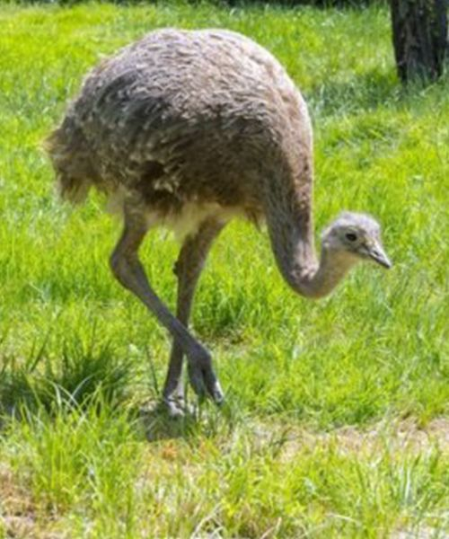

🦜 AVES DO BRASIL
O Brasil apresenta uma grande variedade de aves. Muitas podem ser observadas em florestas, campos, cidades e áreas próximas a rios.
| Ave | Característica | Ambiente |
|---|---|---|
| Arara-canindé | Azul e amarela | Florestas e áreas abertas |
| Tucano-toco | Bico grande | Florestas e cerrado |
| Ema | Não voa | Campos e áreas abertas |

Arara-canindé
Uma das aves mais conhecidas pela combinação de azul e amarelo.

Tucano-toco
Possui bico grande e uma aparência muito característica.

Ema
É uma grande ave que não possui capacidade de voo.